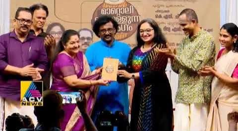
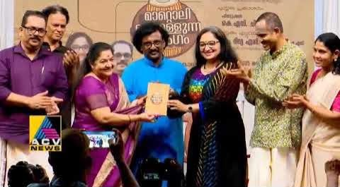

Author
RESOUNDING MRIDANGAM: The Majestic South-Indian Drum
'Resounding Mridangam' is an earnest endeavour chronicling the king of percussion instruments – the Mridangam. This book appeals to all music lovers to get a nuanced perspective of Mridangam and its fitment in the Indian Classical music milieu. It will serve as a definitive handbook of Mridangam.
The book is designed for a wider readership; music students as an academic source at multiple universities across the globe, performing musicians, followers of Indian & Western classical music, and anyone who wishes to gain interdisciplinary knowledge in music. An entire chapter covers the scientific dimensions of Mridangam, and a comparative analysis of various music genres (Western, Hindustani, etc.) is included. The book also contains unheard vignettes of over 200 Mridangam masters.
Buy on Amazonമാറ്റൊലിക്കൊള്ളുന്ന മൃദംഗം (Mattolikkollunna Mridangam)
ദക്ഷിണേന്ത്യൻ താളവാദ്യമായ മൃദംഗത്തെക്കുറിച്ച് ആഴത്തിൽ വിശകലനം ചെയ്യുന്ന ഗ്രന്ഥം. മൃദംഗത്തിന്റെയും ശാസ്ത്രീയ സംഗീതത്തിന്റെയും ചരിത്രത്തിലൂടെയും വർത്തമാനത്തിലൂടെയുമുള്ള മനോഹരമായ ഒരു യാത്രയാണ് ഈ പുസ്തകം.
വിവിധ സർവകലാശാലകളിലെ സംഗീതവിദ്യാർഥികൾ, സംഗീതജ്ഞർ, അധ്യാപകർ, ഭാരതീയ, പാശ്ചാത്യ ശാസ്ത്രീയസംഗീതത്തിന്റെ അനുയായികൾ, സംഗീത ഗവേഷകർ, ആസ്വാദകർ തുടങ്ങി വിശാലമായൊരു വായനാസമൂഹത്തിനുവേണ്ടിയാണ് ഈ പുസ്തകം രൂപകൽപ്പന ചെയ്തിരിക്കുന്നത്.
മൃദംഗത്തിന്റെ ഭൗതികശാസ്ത്രത്തെക്കുറിച്ചുള്ള വിശകലനം വായനക്കാരെ ആവേശഭരിതരാക്കും. ഇരുന്നൂറിലധികം മൃദംഗവിദ്വാൻമാരെക്കുറിച്ചുള്ള വിവരണങ്ങളും ഈ ഗ്രന്ഥത്തിൽ ആധികാരികമായി പ്രതിപാദിച്ചിരിക്കുന്നു.
പുസ്തകത്തിന്റെ പ്രത്യേകതകൾ:
- മൃദംഗത്തിന്റെ ചരിത്രപരമായ വിശകലനം
- ഭൗതികശാസ്ത്രത്തിന്റെ കാഴ്ചപ്പാടിൽ മൃദംഗം
- 200+ മൃദംഗവിദ്വാൻമാരെക്കുറിച്ചുള്ള വിവരണങ്ങൾ
- ശാസ്ത്രീയ സംഗീതത്തിന്റെ വികാസപരമായ പഠനം
- വിദ്യാർഥികൾക്കും ഗവേഷകർക്കും അനുയോജ്യമായ രൂപകൽപ്പന
Praise for Resounding Mridangam
"Resounding Mridangam by Mr. Erickavu N. Sunil is a valuable addition to the literature available on the rare subject of Mrudangam, its history, the performance-practice, and the related topics. This work is quite evident in his passion for music and how he has combined his musical research with scientific aspects and has presented most cohesively."
"The author is very clear about concepts and analysis of Tala systems; in addition, he excels in articulating the systems with pedagogic clarity that will be of great benefit to learners. I am sure this book will be an automatic choice for universities that teach Indian classical music."
From the Author's Desk
 
